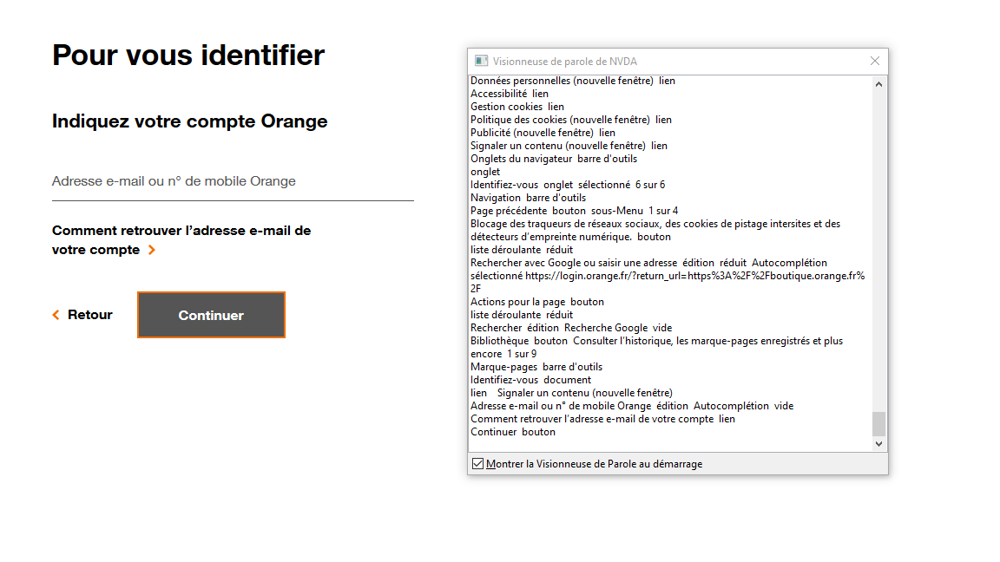
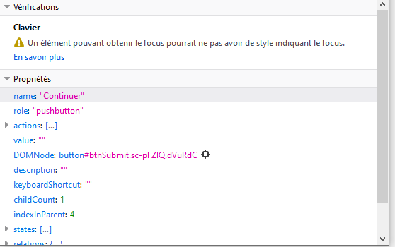
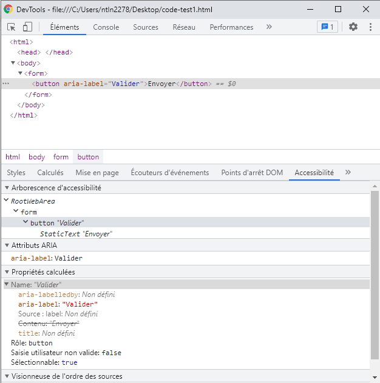

Comment tester le WCAG 2.5.3 ?
Thématiques associées :- Web
- Intermédiaire
Date de parution
Que signifie le WCAG 2.5.3 #
Explication générale #
Le but de ce critère est de s'assurer que si un bouton, un lien ou un autre élément d'interface contient du texte visible à l'écran, son nom accessible doit contenir au moins le même texte que celui affiché.
Cela pour garantir que les utilisateurs d'aides techniques soient capables de comprendre et d'interagir avec le composant. En effet les aides techniques s'appuient sur le nom accessible des composants. Par exemple, un utilisateur de reconnaissance vocale pourra cliquer sur un bouton simplement en prononçant son nom accessible.
Il n'est pas demandé que le texte visible et le nom accessible soient identiques, mais le texte visible doit être présent dans le nom accessible, de préférence en premier.
Exemple concret #
Nom accessible #
Prenons l'exemple d'un utilisateur navigant à l'aide d'un logiciel de reconnaissance vocale souhaitant saisir et soumettre un formulaire.
<button>
<img src="envoyer.png" alt="Soumettre">
</button>
L'exemple ci-dessus risque de poser des difficultés. Le bouton contient une image avec le texte "Envoyer", mais l'alternative textuelle de l'image est "Soumettre", son nom accessible est donc "Soumettre". Les technologies d'assistance se basant sur le nom accessible, si l'utilisateur prononce "Envoyer", il ne se passera rien.
Pour résoudre le problème, il faut que l'alternative textuelle soit la même que le texte de l'image ("Envoyer").
<button>
<img src="envoyer.png" alt="Envoyer">
</button>
Masquage accessible #
Il faut faire attention lorsqu'on utilise du masquage accessible. Celui-ci ne doit pas être placé au milieu d'un intitulé affiché visuellement.
Sinon il sera impossible de faire une corrélation entre le nom accessible et le texte affiché.
Exemple d'erreur :
<a href="www.orange.com" target="_blank"> Ouvrir <span class="visually-hidden">dans une nouvelle fenêtre </span> le site d'orange </a>
Si on prononce "Ouvrir le site d'orange", le logiciel de reconnaissance vocale ne trouvera pas cet élément. En revanche, si l'on prononce "Ouvrir dans une nouvelle fenêtre le site d'orange" le lien sera activé, puisque c'est son nom accessible.
Comment le tester #
Lecteur d'écran #
Le lecteur d'écran vocalise les propriétés de l'élément sur lequel vous placez votre focus.
En particulier, les caractéristiques suivantes de l'élément : sa fonction (lien, bouton, texte ...), son statut et son nom accessible. Si le nom accessible que vous entendez ne correspond pas à ce qui est textuellement visible, alors le critère est considéré comme non-conforme.
Vous pouvez utiliser la visionneuse de paroles du lecteur d'écran afin de retranscrire de manière textuelle les caractéristiques d'un élément. Il est donc possible de comparer le nom accessible sous forme textuelle lu par le lecteur d'écran avec le texte affiché sur le composant.

Inspecteur de commande #
Le moyen de vérifier le critère avec l'inspecteur de commande dépend du navigateur utilisé.
Avec Firefox #
- Accéder à l'inspecteur de commande (Ctrl+ Maj. + i)
- Sélectionner l'onglet accessibilité
- Inspecter un élément
- Regarder la partie propriétés, si l'attribut name contient au moins le texte qui est affiché le critère est conforme

Avec Chrome ou bien Edge Chronium #
- Accéder à l'inspecteur de commande (Ctrl+ Maj. + i)
- Sélectionner l'onglet Éléments
- Choisisser l'élément que vous souhaitez inspecter
- Cliquer sur l'onglet Accessibilité, cet onglet peut être caché derrière le bouton "plus d'onglet"
- Regarder la partie "Propriétées calculées" si l'attribut name contient au moins le texte qui est affiché, le critère est valide
